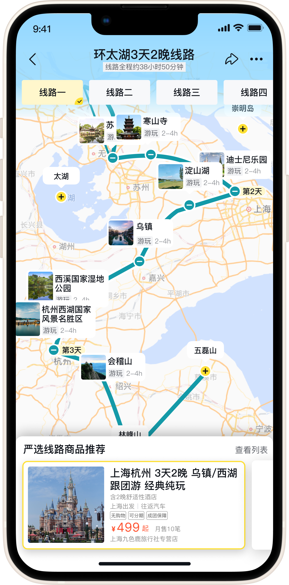
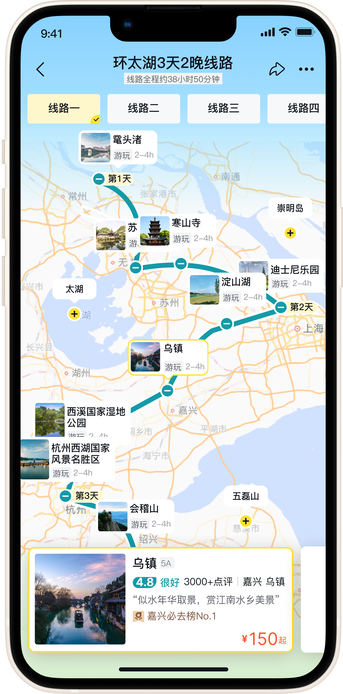
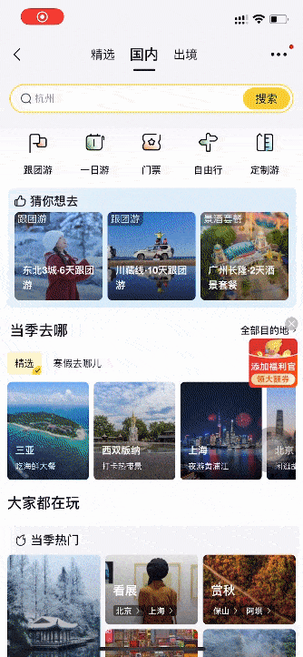
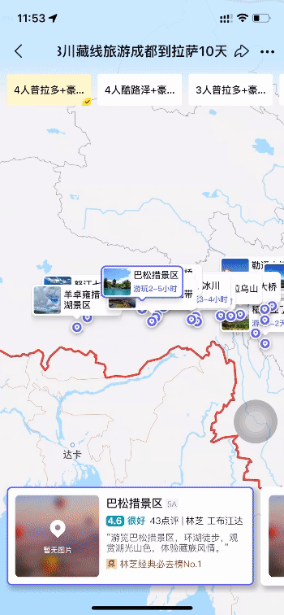
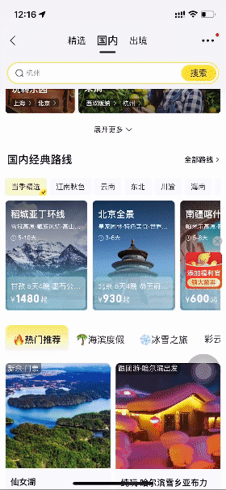
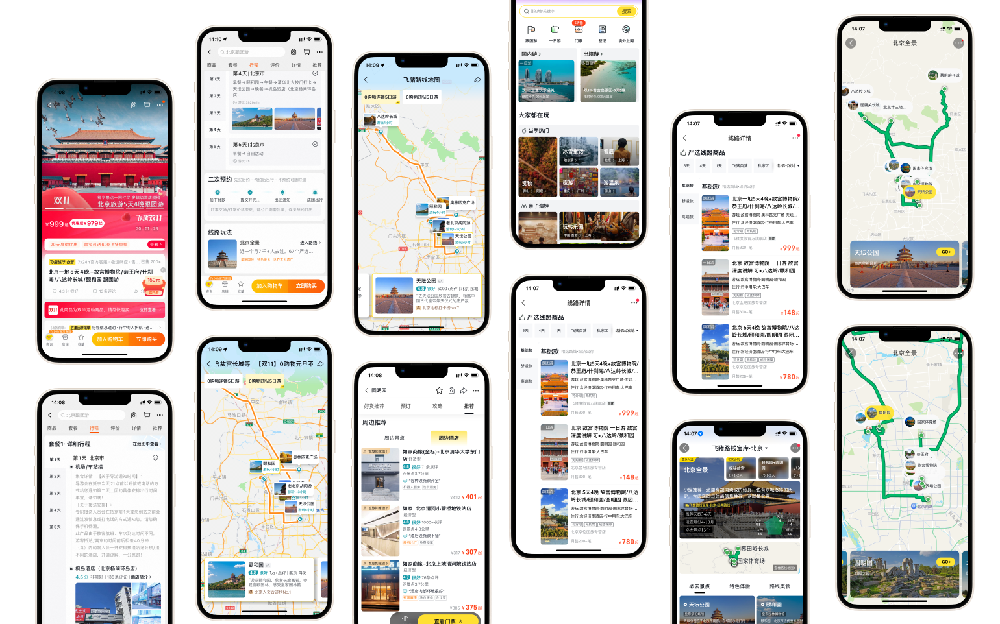

📱Main Features
Add one POI for route recommendation

Click specific POI to see its own information

01. Route Product Visulization
Smart match by clicking POIs
Users can add or remove locations from a predetermined route product, browse individual destinations, and the system will make recommendations based on these actions.
This is my final design pages for internship but not exactly the one launched in Aug,2023. Our team revised some detailes after I left.
But the general ideas are:
Intelligent Routing Search
Based on the user's selected destination, the system will automatically generate travel routes tailored to their preferences.
Increased Usage and Sales
The generated routes match the 5000+ travel packages offered by the platform, thereby increasing conversion and sales rates.
Recommend Nearby POIs
When pinpointing your current location, the system automatically displays cards for nearby POIs. Users can click on the cards to access more detailed information.
Integrate Theme Promotion
Rather than placing tags on map for theme promotion, fliggy provided a new section of “Route Treasure Library” to enrich content based on popular trend.
02. Design System
Quicker Prototyping
I created the reusable components listed right using Fliggy's design framework to make it easier and faster for the team to construct prototypes.

03. Other Launched Pages
To get a clear understand of user journey, here are more integrated features for map visulization.
Route Product

Every route product now has map visulizaion in its detail page
Neighboring Recommendation

When clicking card for specific sceneary, users are able to see neighboring recommendations
Map Library

Within in the "Travel" category, Fliggy has promotion library based on users' top choices
And more...
